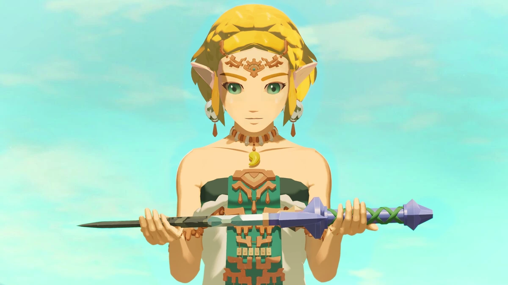
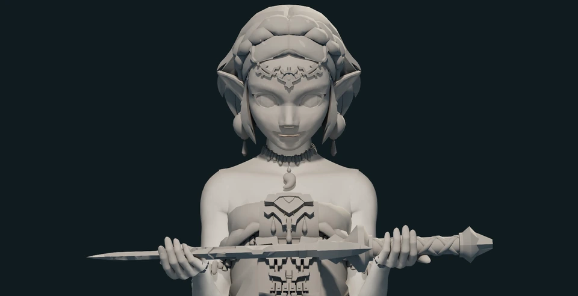
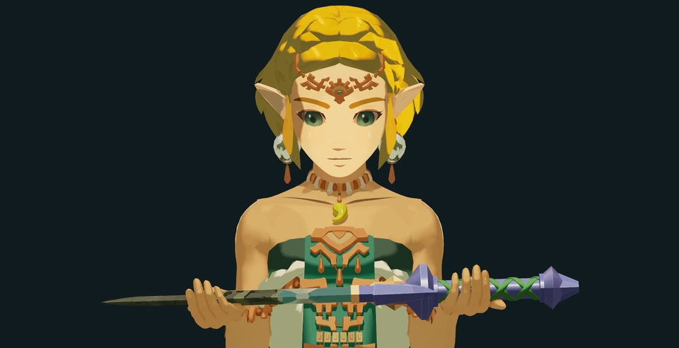
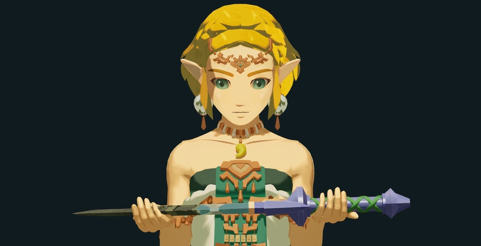
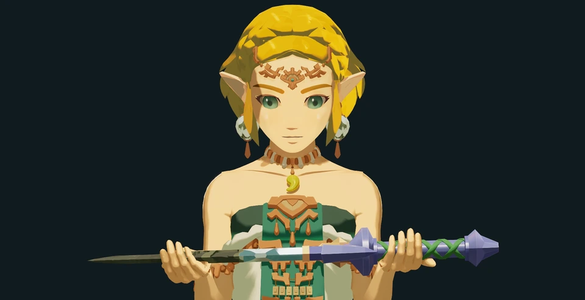

Shape the shadows
Local NPR controls keep the face bright while giving the neck and collarbones readable shadows. Grouped gold and olive tones hold the hair together at the final viewing size.
Lighting & look development
A serene character portrait built through shaped shadows, warm light and a controlled Nuke finish.
My contribution Pose & contact adjustments · lighting · look development · compositing

Fixed-camera study · 4K foreground and AOV render · 1080p composite
A reconstruction of the approved lighting setup, showing the contribution of individual lights, reflections and atmosphere. The stages explain the final shot rather than a chronological production history.
Local NPR controls keep the face bright while giving the neck and collarbones readable shadows. Grouped gold and olive tones hold the hair together at the final viewing size.
A warm key, cool ambient fill, cream fill and golden contour establish the character's form. Dedicated specular cards shape the sword's reflections independently of the skin and atmosphere.
The ACEScg composite separates character, sky and volume. Selective grading, edge LightWrap and separate diffusion for hair and metal connect the image while protecting the pupils and blade detail.
Frames taken directly from the supplied breakdown. Select an image to inspect it at full size; the video above contains the complete progression.

Check pose, hand contact and silhouette before judging the materials. The temporary clay eyes are diagnostic.

Directional warmth establishes the facial shadow pattern and the main sense of form.

Open the face and upper-body shadows while preserving the designed tonal shapes.

A dedicated reflection card clarifies the blade. Its orientation and material roughness were adjusted before increasing light strength.
I locked the camera, gaze and hand contact before refining the shading. Material response and targeted light contributions were then developed around that framing, keeping warm skin separate from the cyan sky, violet hilt and green costume.
Arnold CPU rendered the foreground and AOVs at 3840 × 2160. Linear ACEScg EXRs carried the image into Nuke Non-Commercial, with the ACES 1.0 SDR-video view applied once for sRGB presentation. Rendered volume supplied most of the atmosphere.
The scene contains 16 lights: 11 active and five disabled. Ten active lights contribute to surfaces; one affects volume only. The main blade card is specular-only, keeping reflection control separate from diffuse illumination.
NPR materials include designed tonal shapes as well as their response to scene lights. Local controls shape the neck and collarbone shadows. The sword retains its source textures and UVs, with separate treatment for clean metal, dark corruption, violet hilt planes and the matte green wrap.
Foreground, sky and volume remain separate. The sky plate was extracted and reconstructed from the reference for this framing. Selective material grades protect dark pupils; LightWrap stays on the edges. Hair and blade use separate diffusion branches, with the medium diffusion treatment selected.
The Maya master was retained as linear EXR and 16-bit PNG. Staged Nuke Non-Commercial projects exchange EXRs; the final composite and breakdown are 1920 × 1080. Software documented for the study: Maya 2026.3.3, Arnold 7.4.4.2 and Nuke 17.1v1 Non-Commercial.
Face, neck and reflection masks depend on this pose and framing. Animated shots or different angles would require stability checks. Source geometry and texture resolution also limit the available detail.
Personal fan-art study with no official affiliation. Zelda and The Legend of Zelda belong to Nintendo. The base geometry and textures were sourced externally; this project does not claim original character modelling or texture authorship.
My work covers pose and contact adjustments, look direction, materials, lighting, atmosphere and compositing. The specific base-asset author and distributor are not identified in the supplied case-study documentation.
Get in touch about lighting, compositing, technical art or pipeline opportunities.
Joshalexmedina@hotmail.com